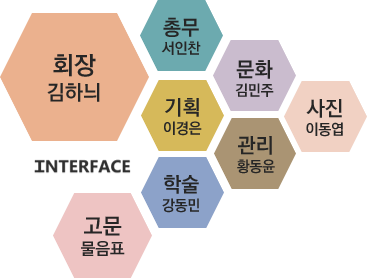

interface
INTERFACE는 세종대학교 컴퓨터 연구회로서,
90년대 창설되어 올해 31기 회원을 모집하고 있습니다.
세종대학교 학생회관 518호에 위치하고 있으며,
컴퓨터에 대한 전반적인 지식을 습득하여
이를 활용, 극대화 하는 능력을 기를 수 있도록
각종 프로그램을 실행하고 있습니다.
interface
INTERFACE는 세종대학교 컴퓨터 연구회로서,
90년대 창설되어 올해 31기 회원을 모집하고 있습니다.
세종대학교 학생회관 518호에 위치하고 있으며,
컴퓨터에 대한 전반적인 지식을 습득하여
이를 활용, 극대화 하는 능력을 기를 수 있도록
각종 프로그램을 실행하고 있습니다.
Club Activities


Staff
